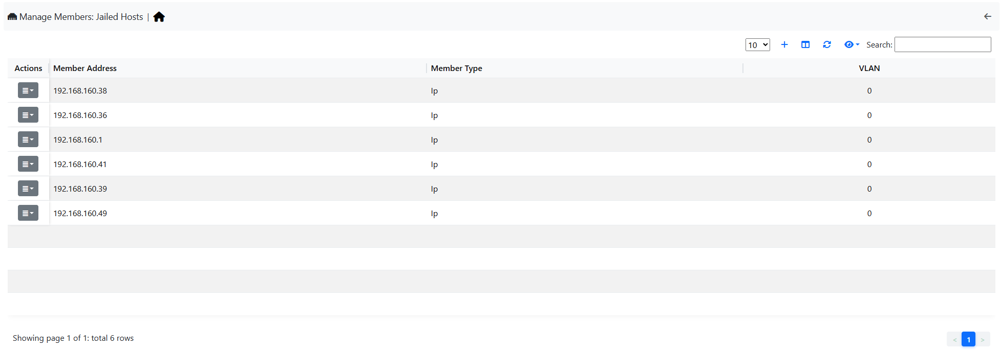

Host Pools
Host Pools are logical groups of hosts that are described in detail in the “Network Interfaces” section of this document. This page show the list of defined and currently active Host Pools.

The Host Pools List Hosts Page
Each row of the table shows, for each pool:
The pool name, as defined when the pool was created
Hosts, the number of active hosts in the pool
Seen Since, the time since the first packet of a host of the pool
Traffic Breakdown, a bar with the share of sent and received traffic
Throughput, the current throughput of the pool
Traffic, the total traffic exchanged by the pool
Members, the addresses, networks and MAC addresses that belong to the pool
The button of the Actions column opens the list of the active hosts of the pool. Its menu also has:
Timeseries, the historical traffic charts of the pool. It is disabled until host pool timeseries are enabled in Settings > Preferences > Timeseries.
Manage Members, the page to add and remove members (administrators only; not available for the Default pool, which holds all the hosts not assigned to another pool)
Edit Name, to rename the pool and change its members
Edit Traffic Policy, the traffic policy of the pool (administrators only, needs ntopng Pro)
Delete, to remove the pool. The built-in Default and Jailed Hosts pools cannot be deleted.
Pools are added with the Add pool button above the table. Adding, editing and deleting pools needs the Pools capability of the user (administrators always have it). Unavailable actions are shown greyed out with the reason.
Pool Members
Manage Members opens the members of the pool; the page title shows the path Host Pools / pool name, click Host Pools to go back to the list. Each row shows the member (an IP address, a network or a MAC address), its type and its VLAN.
Add Host Pool Member asks the type of member (IPv4/IPv6 address, network or MAC address), the address and, for addresses and networks, the VLAN (empty or 0: no VLAN).
The button of each row edits the member; the arrow next to it opens the menu with Delete. A removed member goes back to the Default pool.
A member can belong to one pool only: adding (or changing to) a member that is already in another pool is refused, and the message tells which pool has it. Remove it from that pool first.
Import Host Pools Members opens Settings > Manage Configuration, to load the members from a file.
Only administrators can open this page.

The Host Pool Page
The Host Pools configuration, which includes the definition of host pools along with the pools members, can be easily exported to JSON and imported into another ntopng instance from the Settings > Manage Configuration page. Imported host pools will replace the existing ones.
An “Alias” can be associated to each pool member to ease the its identification. Typically, one would assign a mnemonic label as member alias (e.g., “John’s iPhone” or “Smart TV”).
A view of host pool statistics is accessible from the actual interface, Hosts > Host Pools menu. The view shows live pool information (e.g., overall pool throughput) and provides access to the historical pool traffic timeseries (Professional version) as well as to the currently active pool members.
Traffic Policies
Host pools can also be used to enforce traffic policies (e.g, block YouTube traffic for the “John” pool and limit Facebook traffic at 1 Mbps for the “Guests” pool). This feature is available in nEdge (when ntopng is used inline as described in the “Advanced Features” section of this document), or when ntopng is used in combination with nFW (see Using ntopng with nEdgeLite).
The Edit Traffic Policy action of a pool opens its traffic policy (administrators only, needs ntopng Pro; not on nEdge, which has its own user policies):
Default Policy: what happens to the traffic of the pool that matches no rule, Pass or Drop.
Rules: the exceptions to the default policy, by application protocol, application category, host name (or IP address), country, continent and flow risk. Add Rule chooses the value and the action (Pass, Slow Pass, Slower Pass or Drop); click a rule to change its action, the ✕ removes it. The flows with one of the selected risks are always dropped.
Save applies the changes (it is disabled until something changes).
Auto Configure replaces the rules with the ones suggested by the traffic of the hosts of the pool (the protocols and the sites they use are allowed) and sets the default policy to Drop, after a confirmation. It needs the Top Visited Sites option enabled in Preferences > Applications, ideally a day before.